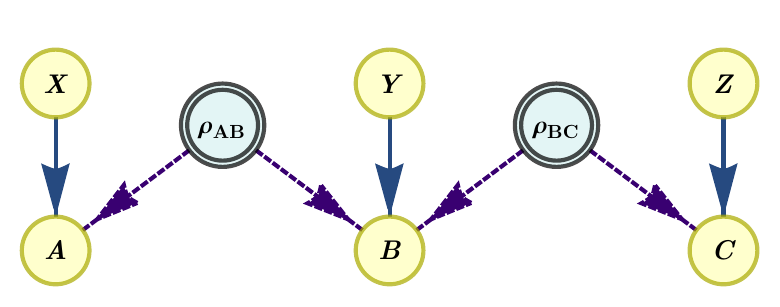
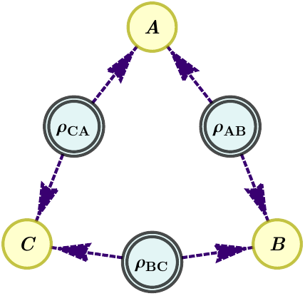
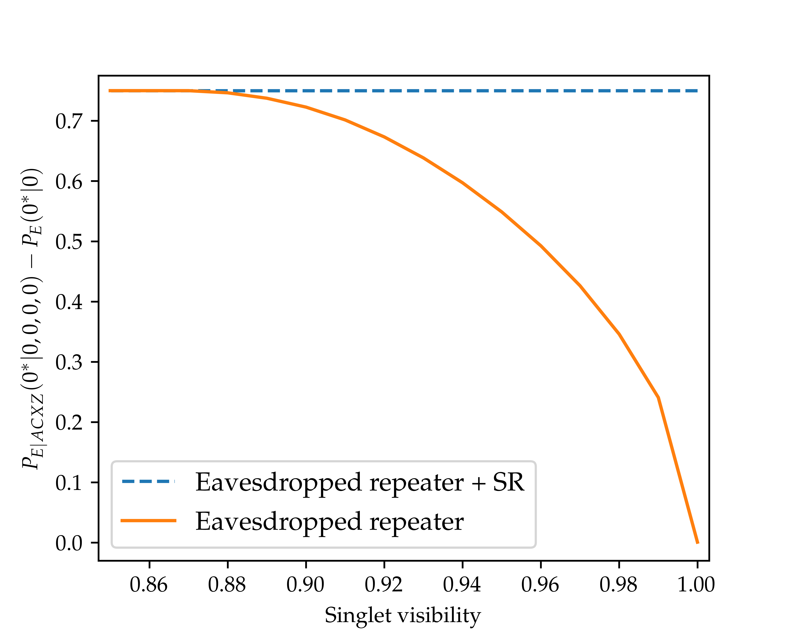
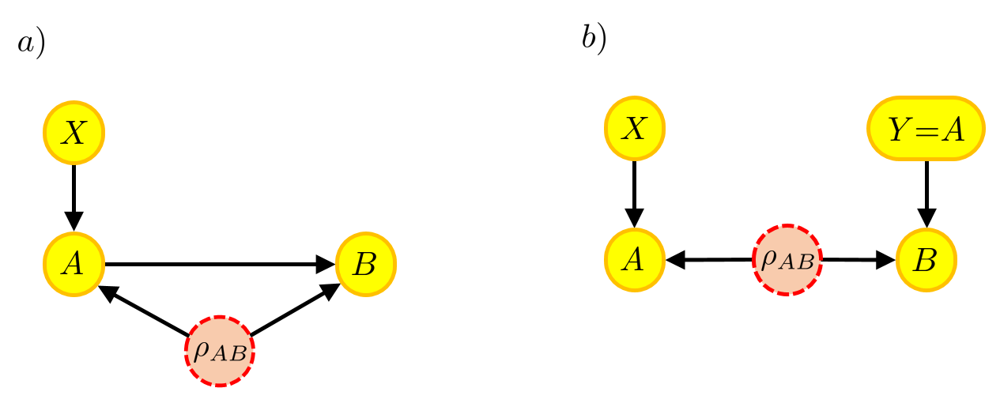
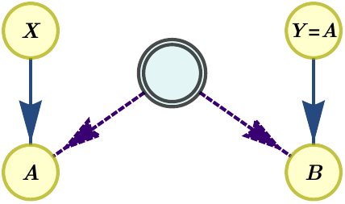

Examples and features
In this section we will showcase the different features of Inflation progressively through a series of examples.
Compatibility problems
One of the basic functionalities of Inflation is addressing compatibility problems of probability distributions with causal models. These were illustrated in the Tutorial section. Here we revisit briefly the examples, and complement them with further functionality, such as extraction of infeasibility certificates and rephrasing feasibility problems in optimization ones.
Example 1: Infeasibility of the 2PR distribution in the quantum tripartite line scenario
Let us begin by recalling the example considered in the Tutorial, namely the compatibility of the 2PR distribution,
with the tripartite line scenario, described by the following DAG

where the latent nodes represent sources of quantum systems. The program that determined the solution to this problem is the following
[1]:
from inflation import InflationProblem, InflationSDP
import numpy as np
tri_line = InflationProblem(dag={"rho_AB": ["A", "B"],
"rho_BC": ["B", "C"]},
outcomes_per_party=(2, 2, 2),
settings_per_party=(2, 2, 2),
inflation_level_per_source=(2, 2))
sdp = InflationSDP(tri_line)
sdp.generate_relaxation("npa2")
def P_2PR(vis=1):
p = np.zeros((2, 2, 2, 2, 2, 2))
for a, b, c, x, y, z in np.ndindex(*p.shape):
p[a, b, c, x, y, z] = \
(1 + vis * (-1) ** (a + b + c + x*y + y*z)) / 8
return p
sdp.set_distribution(P_2PR())
sdp.solve()
sdp.status
[1]:
'infeasible'
The problem status is reported as infeasible. This means that in the quantum inflation where there are two copies of each source (because we defined inflation_level_per_source=(2, 2)), no quantum states and measurements exist that can satisfy all the constraints implied by the scenario and the distribution. As a consequence of this, the 2PR distribution is proved to be incompatible with the quantum tripartite line scenario.
Certificate extraction
Since the feasibility problem is a semidefinite program, we can use Farkas’ lemma to find a certificate that witnesses the incompatibility. Inflation takes care of this automatically when solving the problem. The certificate will take the form of a polynomial inequality in the probabilities, \(\text{Poly}(p(a,b,c|x,y,z)) < 0\) . This means that any other distribution \(p'(a,b,c|x,y,z)\) that also satisfies the inequality, \(\text{Poly}(p'(a,b,c|x,y,z)) < 0\), is guaranteed also to lead to an infeasible SDP, and thus to a proof that it cannot be generated in the quantum triangle scenario.
[2]:
cert = sdp.certificate_as_probs()
cert
[2]:
This certificate evaluates, indeed, to a negative quantity when evaluated in the 2PR distribution, and to positive quantities in feasible distributions like the uniform one.
[3]:
# 2PR distribution
print(sdp.evaluate_certificate(P_2PR()))
# Uniform distribution
print(sdp.evaluate_certificate(np.ones_like(P_2PR()) / 8))
-1.7280000000005655
769.4236250000001
Feasibility as optimisation
Feasibility problems are numerically unstable due to problems with floating-point precision. A more numerically robust approach is to convert feasibility problems to optimisation problems. Take as illustration the case of semidefinite programs. Instead of imposing that the moment matrix \(\Gamma\) of the SDP relaxation is positive semidefinite, which is prone to numerical instabilities, we instead solve the following problem:
where \(1\) is the identity matrix. This problem maximizes the smallest eigenvalue of \(\Gamma\), which is negative when \(\Gamma\) cannot be made positive-semidefinite (i.e., when calling status would return 'infeasible'), and positive otherwise. In the case of linear programs, instead for asking whether a probability distribution compatible with the given inflation exists, we instead solve:
This is, we seek to find a probability distribution by searching for a collection of non-negative numbers that satisfy all conditions implied by the problem. If the optimal value to the problem above is negative, it means that no such collection exists, and thus the original distribution cannot be generated in the given causal structure.
This transformation is produced in Inflation simply by setting the flag feas_as_optim to True in the Inflation(L/SD)P.solve method. The resulting optimal \(\lambda\) is stored in Inflation(L/SD)P.objective_value. This can be used, for example, for writing optimization problems on top of inflation problems. Let us illustrate this with the computation of the critical visibility of the 2PR distribution in the quantum tripartite line scenario:
[4]:
from inflation import InflationProblem, InflationSDP
from scipy.optimize import bisect
import numpy as np
tri_line = InflationProblem(dag={"rho_AB": ["A", "B"],
"rho_BC": ["B", "C"]},
outcomes_per_party=(2, 2, 2),
settings_per_party=(2, 2, 2),
inflation_level_per_source=(2, 2))
sdp = InflationSDP(tri_line)
sdp.generate_relaxation("npa2")
def P_2PR(vis=1):
p = np.zeros((2, 2, 2, 2, 2, 2))
for a, b, c, x, y, z in np.ndindex(*p.shape):
p[a, b, c, x, y, z] = \
(1 + vis * (-1) ** (a + b + c + x*y + y*z)) / 8
return p
def min_eigenvalue(vis):
sdp.set_distribution(P_2PR(vis))
sdp.solve(feas_as_optim=True)
print(f"Visibility = {vis:<6.4g} " +
"Maximum smallest eigenvalue: " +
"{:10.4g}".format(sdp.objective_value))
return sdp.objective_value
bisect(min_eigenvalue, 0, 1, xtol=1e-4)
Visibility = 0 Maximum smallest eigenvalue: 0.01208
Visibility = 1 Maximum smallest eigenvalue: -0.112
Visibility = 0.5 Maximum smallest eigenvalue: 5.531e-09
Visibility = 0.75 Maximum smallest eigenvalue: -0.04709
Visibility = 0.625 Maximum smallest eigenvalue: -0.02075
Visibility = 0.5625 Maximum smallest eigenvalue: -0.009571
Visibility = 0.5312 Maximum smallest eigenvalue: -0.004592
Visibility = 0.5156 Maximum smallest eigenvalue: -0.00226
Visibility = 0.5078 Maximum smallest eigenvalue: -0.001123
Visibility = 0.5039 Maximum smallest eigenvalue: -0.0005598
Visibility = 0.502 Maximum smallest eigenvalue: -0.0002794
Visibility = 0.501 Maximum smallest eigenvalue: -0.0001396
Visibility = 0.5005 Maximum smallest eigenvalue: -6.978e-05
Visibility = 0.5002 Maximum smallest eigenvalue: -3.488e-05
Visibility = 0.5001 Maximum smallest eigenvalue: -1.744e-05
Visibility = 0.5001 Maximum smallest eigenvalue: -8.715e-06
[4]:
0.50006103515625
We recover a critical visibility that is consistent with the known critical visibility of the 2PR distribution in the quantum tripartite-line scenario, namely \(v>\frac{1}{2}\) [1]. Higher inflations or higher levels in the NPA hierarchy are expected to get closer to the correct value, \(v=\frac{1}{2}\), and potentially reaching it, as the hierarchy increases.
Note that in this example we have created our own bisection function. In the following examples, we will use an in-built one.
Scenarios with classical sources
In inflation, both the one based in linear programming and the one based in semidefinite programming, on of the primary applications is to optimize over relaxations of the sets of distributions compatible with DAGs where some (or all) sources distribute classical shared randomness. While this is direct in the methods based in linear programming, in those based on semidefinite programming this works by imposing the constraint that the operators that act on classical systems and different copies of the remaining systems commute. The effect of these constraints is that previously different variables become equal. For example, \(\langle A_{x} A_{x'} \rangle \neq \langle A_{x'} A_{x} \rangle\) in general in quantum mechanics, but if we assume that the operators act on classical systems, then they become equal. In the semidefinite-programming technique, when all sources in the scenario are classical, one obtains hierarchies analogous to that of [2], which in the case of inflation are semidefinite relaxations of the linear programs that are used in the original inflation technique [3].
If there are classical sources in the scenario, these can be specified at the level of the InflationProblem using the argument classical_sources. In the following we will see two examples, that deal with classical sources in InflationLP and InflationSDP.
Example 2: The Fritz distribution in the triangle scenario
One of the earliest examples of correlations without local models in the triangle scenario (where three bipartite sources distribute systems to three different parties arranged in a triangle, see also Example 4) is due to Fritz [4]. This example takes the distribution underlying a bipartite Bell test and embeds it in a tripartite distribution with no inputs and four outcomes per party. Importantly, since it comes from a setup with a single quantum source, Fritz’s distribution can be realized only when one specific source is quantum, and the remaining two can be classical. Indeed, let us first see that setting two of the sources to be classical, inflation cannot detect Fritz’s distribution as incompatible with it.
[5]:
from inflation import InflationProblem, InflationSDP
import numpy as np
def Fritz():
p = np.zeros((4, 4, 4, 1, 1, 1))
for pos in [[0, 0, 0], [1, 1, 0], [0, 2, 1], [1, 3, 1],
[2, 0, 2], [3, 1, 2], [2, 3, 3], [3, 2, 3]]:
p[pos[0], pos[1], pos[2], 0, 0, 0] = (2 + np.sqrt(2)) / 32
for pos in [[0, 1, 0], [1, 0, 0], [0, 3, 1], [1, 2, 1],
[2, 1, 2], [3, 0, 2], [2, 2, 3], [3, 3, 3]]:
p[pos[0], pos[1], pos[2], 0, 0, 0] = (2 - np.sqrt(2)) / 32
return p
triangle = InflationProblem(dag={"rho_AB": ["A", "B"],
"rho_BC": ["B", "C"],
"rho_AC": ["A", "C"]},
outcomes_per_party=(4, 4, 4),
settings_per_party=(1, 1, 1),
inflation_level_per_source=(2, 2, 2),
classical_sources=["rho_BC", "rho_AC"]
)
sdp = InflationSDP(triangle)
# We use a custom generating set of columns. See Example 3 for details
columns = sdp.build_columns("local1", max_monomial_length=2)
sdp.generate_relaxation(columns)
sdp.set_distribution(Fritz())
sdp.solve()
print(sdp.status)
feasible
However, as soon as the relevant source (for the form of the distribution written, rho_AB) is restricted to be classical, the inflation detects the distribution as incompatible.
[6]:
triangle = InflationProblem(dag={"rho_AB": ["A", "B"],
"rho_BC": ["B", "C"],
"rho_AC": ["A", "C"]},
outcomes_per_party=(4, 4, 4),
settings_per_party=(1, 1, 1),
inflation_level_per_source=(2, 2, 2),
classical_sources=["rho_AB"]
)
sdp = InflationSDP(triangle)
columns = sdp.build_columns("npa2")
sdp.generate_relaxation(columns)
sdp.set_distribution(Fritz())
sdp.solve()
print(sdp.status)
infeasible
Example 3: Full network nonlocality
Full network nonlocality [5] is a proposal for genuinely nonclassical correlations in networks. Namely, distributions are fully network nonlocal if and only if they can not be produced if there is any classical source in the network. Notably, no restrictions are put on the remaining sources in the network, so in general they are described by some non-signaling theory. Therefore, models for non-fully network nonlocal correlations can be modeled with the linear-programming version of inflation. In order to illustrate this, let us recover one of the results in [5], namely, that the family of probability distributions that give the following correlators
is fully network nonlocal for any \(\theta\) except for \(\theta=0\) and \(\theta=\frac{\pi}{2}\). This example also requires the use of the QuTiP Python package to generate the probability distribution.
[7]:
from inflation import InflationProblem, InflationLP
from numpy import pi as π
import qutip as qt
import numpy as np
def prob(θ):
ψminus = qt.ket2dm(qt.singlet_state())
ψminus.dims = [[4], [4]]
id2 = qt.qeye(2);
ρ = qt.tensor([ψminus, ψminus])
ρ.dims = [[2, 4, 2], [2, 4, 2]]
A = C = [qt.sigmax(), qt.sigmay(), qt.sigmaz()]
ηs = [1/np.sqrt(3), -1/np.sqrt(3), -1/np.sqrt(3), 1/np.sqrt(3)]
ϕs = [π/4, -π/4, 3*π/4, -3*π/4]
plusm = np.zeros((4,2), dtype=complex)
minusm = np.zeros((4,2), dtype=complex)
ejm = [0, 0, 0, 0]
B = []
for j in range(4):
plusm[j] = [np.sqrt((1+ηs[j])/2)*np.exp(-1j*ϕs[j]/2),
np.sqrt((1-ηs[j])/2)*np.exp(1j*ϕs[j]/2)]
minusm[j] = [np.sqrt((1-ηs[j])/2)*np.exp(-1j*ϕs[j]/2),
-np.sqrt((1+ηs[j])/2)*np.exp(1j*ϕs[j]/2)]
ejm[j] = qt.Qobj((
((np.sqrt(3)+np.exp(1j*θ))/(2*np.sqrt(2)))*np.kron(plusm[j],minusm[j])
+ ((np.sqrt(3)-np.exp(1j*θ))/(2*np.sqrt(2)))*np.kron(minusm[j],plusm[j])
))
B.append(qt.ket2dm(ejm[j]))
p = np.zeros((2, 4, 2, 3, 1, 3))
for a, b, c, x, z in np.ndindex(2, 4, 2, 3, 3):
p[a,b,c,x,0,z] = np.real(ρ.overlap(
qt.tensor([id2+(-1)**a*A[x], B[b], id2+(-1)**c*C[z]]))/4)
return p
# Define the InflationProblem
bilocality = InflationProblem(dag={'l1': ["A", "B"],
'l2': ["B", "C"]},
outcomes_per_party=[2, 4, 2],
settings_per_party=[3, 1, 3],
inflation_level_per_source=[1, 2],
classical_sources=["l1"])
# Define the linear program
inflationLP = InflationLP(bilocality)
for θ in [0, π*np.random.rand()/2, π/2]:
inflationLP.set_distribution(prob(θ))
inflationLP.solve()
print(f"The distribution for θ={θ} is {inflationLP.status}")
The distribution for θ=0 is optimal
The distribution for θ=0.3803811198654002 is dual_infeas_cer
The distribution for θ=1.5707963267948966 is optimal
Optimization of Bell operators
One can use inflation techniques to not only run causal compatibility problems, but also to optimize over the generated relaxation, and therefore get upper bounds on the values of various Bell operators.
Example 4. Upper bounds on Mermin’s inequality
Let us consider Mermin’s inequality, written in the correlator form as follows:
where correlators are defined as
It is known that the algebraic maximum of 4 is achieved in the tripartite scenario when using genuinely tripartite entangled quantum states. However, this is not the case [5] when restricting to states that can be generated in the following DAG, called the quantum triangle scenario:

Let us find this result with Inflation:
[8]:
from inflation import InflationProblem, InflationSDP
triangle = InflationProblem(
dag={"rho_AB": ["A", "B"],
"rho_BC": ["B", "C"],
"rho_AC": ["A", "C"]},
outcomes_per_party=(2, 2, 2),
settings_per_party=(2, 2, 2),
inflation_level_per_source=(2, 2, 2)
)
sdp = InflationSDP(triangle)
sdp.generate_relaxation("npa2")
mmnts = sdp.measurements
A0, B0, C0, A1, B1, C1 = (1 - 2*mmnts[party][0][setting][0]
for setting in range(2)
for party in range(3))
sdp.set_objective(A1*B0*C0 + A0*B1*C0 + A0*B0*C1 - A1*B1*C1)
sdp.solve()
sdp.objective_value
[8]:
3.999999981240686
We get a value that is within numerical precision the algebraic maximum of 4. To improve on this result, we will need to do a tighter SDP relaxation.
Customising the generating set for the semidefinite relaxation
To get a tighter SDP relaxation, we will add more monomials to the generating set. Namely, we will use (as indicated in [6]) the union of the monomials corresponding to NPA level 2 and local level 1.
In order to do so, we use the built-in method InflationSDP.build_columns, which admits specifying levels in popular hierarchies (such as NPA and local levels) using a string-based notation.
[9]:
from inflation import InflationProblem, InflationSDP
triangle = InflationProblem(
dag={"rho_AB": ["A", "B"],
"rho_BC": ["B", "C"],
"rho_AC": ["A", "C"]},
outcomes_per_party=(2, 2, 2),
settings_per_party=(2, 2, 2),
inflation_level_per_source=(2, 2, 2)
)
sdp = InflationSDP(triangle)
npa2 = sdp.build_columns("npa2", symbolic=True)
local1 = sdp.build_columns("local1", symbolic=True)
npa2_union_local1 = set(npa2).union(set(local1))
sdp.generate_relaxation(list(npa2_union_local1))
mmnts = sdp.measurements
A0, B0, C0, A1, B1, C1 = (1 - 2*mmnts[party][0][setting][0]
for setting in range(2)
for party in range(3))
sdp.set_objective(A1*B0*C0 + A0*B1*C0 + A0*B0*C1 - A1*B1*C1)
sdp.solve()
sdp.objective_value
[9]:
3.085044522914157
After running the above, we can certify then that the Mermin inequality cannot have a value larger than \(3.085\) for the quantum triangle causal scenario, recovering the result in [6].
Standard NPA hierarchy
If the DAG corresponds to a single global shared source scenario, then doing an inflation does not grant any advantage. In this case, the semidefinite programs are those corresponding to the standard Navascués-Pironio-Acín hierarchy [7].
Example 5: Critical visibility of the PR box in the standard Bell scenario with quantum sources
Let us recover the critical visibility of \(v_{\text{crit}}=\frac{1}{\sqrt{2}}\) for a Popescu-Rohrlich box [8]. We will take this chance to use the in-built function for optimizing scalar quantities under (relaxations of) the set of feasible distributions.
[10]:
from inflation import InflationProblem, InflationSDP
from inflation import max_within_feasible
from sympy import Symbol
import numpy as np
bellscenario = InflationProblem(dag={"rho_AB": ["A", "B"]},
outcomes_per_party=(2, 2),
settings_per_party=(2, 2))
sdp = InflationSDP(bellscenario)
sdp.generate_relaxation("npa1")
def P_PRbox(vis=1):
p = np.zeros((2, 2, 2, 2), dtype=object)
for a, b, x, y in np.ndindex(*p.shape):
if (x, y) == (1, 1):
if a != b:
p[a, b, x, y] = 1 / 2
else:
if a == b:
p[a, b, x, y] = 1 / 2
return vis * p + (1 - vis) * np.ones(p.shape) / 2 ** 2
sdp.set_distribution(P_PRbox(Symbol("v")))
v = max_within_feasible(sdp,
sdp.known_moments,
"bisection")
print("Critical visibility:", v,
f"\nCertificate:\n{sdp.certificate_as_string(chop_tol=1e-4)}")
Critical visibility: 0.70709228515625
Certificate:
1.0+4.828*P[A_0=0]+4.828*P[B_0=0]-4.828*P[A_0=0 B_0=0]-4.828*P[A_0=0 B_1=0]-4.828*P[A_1=0 B_0=0]+4.828*P[A_1=0 B_1=0] < 0
Notice that the dual certificate that we extract is the well-known CHSH inequality tangent to the quantum set of correlations, modulo a global factor. We can see that this is indeed the case. For doing so, we write the resulting expression in correlators:
[11]:
# The Bell inequality is cert > 0. Writing in correlators:
l, r = r"\langle ", r"\rangle"
from sympy import Symbol
prob_to_corr = {}
cert = sdp.certificate_as_probs(chop_tol=1e-4)
for prob in cert.free_symbols:
inputs = "".join([party.split("{")[1][0] for party in str(prob).split(",")])
parties = "".join([party.split("_")[0][-1] for party in str(prob).split(",")])
if len(inputs) == 1:
prob_to_corr[prob] = \
(1 + Symbol(l + parties +"_{"+inputs+"}"+ r)) / 2
else:
prob_to_corr[prob] = \
(1 + Symbol(l + parties[0] +"_{"+inputs[0]+"}"+ r)
+ Symbol(l + parties[1] +"_{"+inputs[1]+"}"+ r)
+ Symbol(l + parties[0] + "_{"+inputs[0]+"}" +
parties[1] + "_{"+inputs[1]+"}" + r)) / 4
0.8285*cert.subs(prob_to_corr)
[11]:
Feasibility with limited information
Sometimes, one does not have access to a complete probability distribution but only to certain marginals. In this case, one can specify only particular values for monomials in an InflationSDP via the use of the function InflationSDP.set_values.
Example 6: Eavesdropped quantum repeater
An important example is the the analysis of cryptographic scenarios, where the honest parties may know their joint distribution but they cannot know their joint distribution together with a potential adversary. One simple such scenario is considered in [6, Sec. VII]. This scenario considers the quantum repeater/entanglement swapping experiment from Example 1 but with a hidden adversary, Eve, which is eavesdropping the sources \(\rho_{AB}\) and \(\rho_{BC}\) in an attempt to extract information about the secret key Alice and Charlie are trying to establish. In this scenario one would want to estimate how much information Eve can extract about the secret key. In the following, we implement this example within Inflation:
[12]:
from inflation import InflationSDP, InflationProblem
import numpy as np
InfProb = InflationProblem(dag={"rhoABE": ["A", "B", "E"],
"rhoBCE": ["B", "C", "E"]},
outcomes_per_party=(2, 4, 2, 2),
settings_per_party=(2, 1, 2, 1),
inflation_level_per_source=(2, 2),
order=["A", "B", "C", "E"])
InfSDP = InflationSDP(InfProb)
InfSDP.generate_relaxation(
InfSDP.build_columns("local1", max_monomial_length=3)
)
meas = InfSDP.measurements
A0 = meas[0][0][0][0]
C0 = meas[2][0][0][0]
E0 = meas[3][0][0][0]
def P_ABC(vis=1):
p = np.zeros((2, 4, 2, 2, 1, 2))
for a, b, c, x, y, z in np.ndindex(*p.shape):
b0, b1 = np.unravel_index(b, (2, 2))
p[a, 2*b1 + b0, c, x, y, z] = 1 / 2**4 * \
(1 + \
vis**2*(-1)**(a+c)*(((-1)**b0+(-1)**(b1+x+z))/2)
)
return p
for vis in np.linspace(1, 0.85, 16):
p = P_ABC(vis)
p0 = np.sum(p[0, :, 0, 0, 0])
InfSDP.set_objective(A0*C0*E0 / p0 - E0)
known_values = {}
# 3 body terms
for a, b, c, x, y, z in np.ndindex(1, 3, 1, 2, 1, 2):
known_values[meas[0][0][x][a]
*meas[1][0][y][b]
*meas[2][0][z][c]] = p[a, b, c, x, y, z]
# 2 body terms
for a, b, x, y in np.ndindex(1, 3, 2, 1):
known_values[meas[0][0][x][a]
*meas[1][0][y][b]
] = np.sum(p[a, b, :, x, y, 0])
for a, c, x, z in np.ndindex(1, 1, 2, 2):
known_values[meas[0][0][x][a]
*meas[2][0][z][c]
] = np.sum(p[a, :, c, x, 0, z])
for b, c, y, z in np.ndindex(3, 1, 1, 2):
known_values[meas[1][0][y][b]
*meas[2][0][z][c]
] = np.sum(p[:, b, c, 0, y, z])
# 1 body terms
for a, x in np.ndindex(1, 2):
known_values[meas[0][0][x][a]] \
= np.sum(p[a, :, :, x, 0, 0])
for b, y in np.ndindex(3, 1):
known_values[meas[1][0][y][b]] \
= np.sum(p[:, b, :, 0, y, 0])
for c, z in np.ndindex(1, 2):
known_values[meas[2][0][z][c]] \
= np.sum(p[:, :, c, 0, 0, z])
InfSDP.set_values(known_values)
InfSDP.solve() # It takes a while to solve
# print(vis, InfSDP.objective_value)
After running the code above and plotting the curve:

we recover the correct bounds from [6].
Using certificates of infeasibility to speed up optimization of scalars
In several examples we have used a bisection algorithm to compute critical visibilities. Bisection provides a good and general way of finding zeros of functions, taking \(n=\lceil \log_2\Delta-\log_2\varepsilon\rceil\) iterations to reach a solution within accuracy \(\varepsilon\) when the variable is constrained to lie in an interval of length \(\Delta\). It turns out that this number of steps can be reduced by using the certificates of infeasibility. These certificates are surfaces
that always leave the feasible region in the half-space that takes positive values. Typically, choosing as next candidate the value of the parameter that lies within the surface \(\text{cert}=0\) takes one closer to the actual solution than taking the increasingly smaller steps that are taken in bisection, saving in SDP evaluations. It is possible to use the certificates of infeasibility when using max_within_feasible just by specifying "dual" as the method to be used.
Example 7: Device independent entanglement certification
In this example we are going to combine a few of the tools we have seen so far. On one hand, we will use InflationSDP.set_values to fix only certain values of our moment matrix. On the other, we will not specify a DAG but set all sources to be classical when defining InflationSDP in order to characterize relaxations of the set of distributions that can be generated when the parties have access to global shared randomness. Moreover, we will use certificate information to reduce the number
of evaluations. The goal will be to reproduce the results of [2] regarding efficient device-independent certifications of entanglement in many-body systems. Concretely, we will compute the noise robustness of the W state of 7 qubits using Inflation. For this, we use tools from the Hierarchy for nonlocality detection repository. As Example 3, this example also requires the use of the
QuTiP Python package to simulate measurements on the W state.
[13]:
from inflation import InflationSDP, InflationProblem
from inflation import max_within_feasible
from sympy import Symbol
from qutip import (basis, expect, ket2dm, qeye, sigmax,
sigmaz, tensor)
import numpy as np
N = 7 # How many spins in the system
outcomes = [2] * N # 2 measurements per site
settings = [2] * N # 2 outcomes per site
bell = InflationProblem(outcomes_per_party=outcomes,
settings_per_party=settings,
classical_sources="all")
sdp = InflationSDP(bell)
sdp.generate_relaxation("npa2")
meas = sdp.measurements
def get_W_reduced(N):
"""Generates the reduced four-body state for the N-partite
W state. Since the W state is symmetric, it is independent
of the choice of the four parties that one considers.
Source:
https://github.com/FlavioBaccari/Hierarchy-for-nonlocality-detection
"""
def get_W_state(N):
"""Generates the density matrix for the N-partite W
state."""
state = tensor([basis(2, 1)]
+ [basis(2, 0) for _ in range(N - 1)])
for i in range(1, N):
components = [basis(2, 0) for _ in range(N)]
components[i] = basis(2, 1)
state += tensor(components)
return 1. / N**0.5 * state
w = ket2dm(get_W_state(4))
rest = ket2dm(tensor([basis(2, 0) for _ in range(4)]))
return 4. / N * w + (N - 4.) / N * rest
W_state = get_W_reduced(N)
W_operators = [[[v.proj() for v in meas.eigenstates()[1]]
for meas in [sigmax(), sigmaz()]]
for p in range(N)]
noise = tensor([qeye(2) for _ in range(4)]) / 16
vis = Symbol("v")
# Creation of the known values. The W state is independent of
# the choice of the four parties considered. We use this to
# simplify the calculation of the reduced moments.
known_values = {}
for if_p_involved in np.ndindex(*([2]*N)):
if sum(if_p_involved) == 0:
known_values[1] = 1
elif sum(if_p_involved) <= 4:
p_involved = [p for p in range(N) if if_p_involved[p]]
for sett in np.ndindex(*[settings[p]
for p in p_involved]):
for out in np.ndindex(*[outcomes[p] - 1
for p in p_involved]):
sdpvar = np.prod(
[meas[p][0][x][a]
for p, x, a in zip(p_involved, sett, out)
])
projectors = \
[W_operators[p][x][a]
for p, x, a in zip(p_involved, sett, out)]
for _ in range(4 - sum(if_p_involved)):
# Complete with identity projectors
projectors.append(qeye(2))
measurement = tensor(projectors)
known_values[sdpvar] = \
(vis * expect(measurement, W_state)
+ (1-vis) * expect(measurement, noise))
sdp.set_values(known_values)
max_within_feasible(sdp, sdp.known_moments, "dual")
[13]:
0.7233583754329858
We correctly recover the results for the W state visibility of \(\nu_{\textrm{crit}}\approx 0.723\) for \(N=7\) in [2, Table 1]. Reaching this value took \(5\) iterations of the algorithm (you can check it by passing the argument verbose=True). In contrast, finding the same value using bisection would have cost solving \(16\) SDPs.
Non-negative operators as generating monomials
For the generation of the semidefinite programming relaxation, besides NPA levels and local levels, InflationSDP.build_columns also accepts as input strings of the form 'physicalN'. When this is done, the set of monomials used for creating the moment matrix is the subset of local level \(N\) formed by all the monomials which have non-negative expectation value under any quantum state. Using these monomials as generators of the moment matrix is beneficial because the condition that
the moment matrix is positive-semidefinite readily implies that the corresponding expectation values represent probabilities with appropriate normalization constraints. In general, and as we will see below, this turns out to provide tighter characterizations with notably fewer computational resources.
Example 8: Critical visibility of the W distribution with the hierarchy of non-negative monomials
As an application, we show how we can recover the critical visibility \(v_{\text{crit}}\approx 0.8038\) of the W distribution, defined as
in the quantum triangle scenario. In [6] this result was obtained using the second-order quantum inflation of the triangle scenario, and the generating set corresponding to the monomials of local level 2 which had a maximum of 4 operators. This corresponds to a set of \(1175\) operators, and thus a moment matrix of size \(1175\times 1175\). We now shall see that we can obtain the same result using only the generating monomials which are non-negative:
[14]:
from inflation import InflationProblem, InflationSDP
from inflation import max_within_feasible
from sympy import Symbol
import numpy as np
triangle = InflationProblem(
dag={"rho_AB": ["A", "B"],
"rho_BC": ["B", "C"],
"rho_AC": ["A", "C"]},
outcomes_per_party=(2, 2, 2),
settings_per_party=(1, 1, 1),
inflation_level_per_source=(2, 2, 2)
)
sdp = InflationSDP(triangle)
nonneg = sdp.build_columns("physical2", max_monomial_length=4)
print("Number of operators:", len(nonneg))
sdp.generate_relaxation(nonneg)
def P_W(vis=1):
p = np.zeros((2, 2, 2, 1, 1, 1))
for a, b, c, x, y, z in np.ndindex(*p.shape):
if a + b + c == 1:
p[a, b, c, x, y, z] = 1 / 3
return vis * p + (1 - vis) * np.ones(p.shape) / 2 ** 3
sdp.set_distribution(P_W(Symbol("v")))
max_within_feasible(sdp, sdp.known_moments, "dual")
Number of operators: 287
[14]:
0.8038476176808751
We recover the same critical visibility of \(v_{\text{crit}}\approx 0.8039\) with a moment matrix of size \(287\times 287\) as opposed to \(1175\times 1175\), which leads to a significant gain in performance.
Linearized polynomial identification constraints
In order to increase the tightness of the relaxations, one can impose in the programs the so-called linearized polynomial identification (LPI) constraints [9]. These are proportionality constraints between different variables in the program (inflation probabilities in case of linear programs and entries in the moment matrix in semidefinite programs), which arise due to the fact that there exist disconnected sets of parties in the inflation graphs.
As a simplified example, consider the moment \(\langle A^{110}_{xa} B^{202}_{x'a'} B^{201}_{yb} \rangle\) in a quantum inflation of the triangle scenario, where the superindices indicate the copies of the sources that arrive to each party, and the value 0 means that the party does not measure the corresponding source. For example, \(B^{201}_{yb}\) represents Bob measuring outcome \(b\) of setting \(y\) on copy 2 of \(\rho_{AB}\) and copy 1 of \(\rho_{BC}\). Notice that because of the non-overlapping support of some of the moments, the moment factorises as follows:
The moment \(\langle A^{110}_{xa} \rangle\) is known to be equal to \(p_A(a|x)\), but \(\langle B^{202}_{x'a'} B^{201}_{yb} \rangle\) is unknown. Therefore, in compatibility problems where \(p_A(a|x)\) is associated a number, a linear proportionality relationship between the variables \(\langle A^{110}_{xa} B^{202}_{x'a'} B^{201}_{yb} \rangle\) and \(\langle B^{202}_{x'a'} B^{201}_{yb} \rangle\) can be imposed, the proportionality constant being \(p_A(a|x)\).
Proportionality constraints of these form can be automatically implemented by setting use_lpi_constraints to True when using Inflation(L/SD)P.set_values or Inflation(L/SD)P.set_distribution.
Example 9: Critical visibility of the W distribution with LPI constraints
We will now show how using LPI constraints lead to tighter relaxations. Let us revisit Example 7 and insert the new constraints:
[15]:
from inflation import InflationProblem, InflationSDP
from inflation import max_within_feasible
from sympy import Symbol
import numpy as np
triangle = InflationProblem(
dag={"rho_AB": ["A", "B"],
"rho_BC": ["B", "C"],
"rho_AC": ["A", "C"]},
outcomes_per_party=(2, 2, 2),
settings_per_party=(1, 1, 1),
inflation_level_per_source=(2, 2, 2)
)
sdp = InflationSDP(triangle)
cols = sdp.build_columns("physical2", max_monomial_length=4)
sdp.generate_relaxation(cols)
def P_W(vis=1):
p = np.zeros((2, 2, 2, 1, 1, 1))
for a, b, c, x, y, z in np.ndindex(*p.shape):
if a + b + c == 1:
p[a, b, c, x, y, z] = 1 / 3
return vis * p + (1 - vis) * np.ones(p.shape) / 2 ** 3
sdp.set_distribution(P_W(Symbol("v")))
moments = sdp.known_moments
sdp.reset("all")
max_within_feasible(sdp, moments, "dual",
use_lpi_constraints=True)
[15]:
0.7563883306017936
The critical value for the noise that we achieve, \(v_{\text{crit}}=0.7624\), is lower than the critical value for the noise that we achieved in Example 7, \(v_{\text{crit}}=0.8039\).
Warning! The tradeoff of using LPI constraints is that the dual certificate is no longer valid for other distributions. We can still certify incompatibility of a specific distribution \(P_0\) with a certain causal model with the extracted certificate \(\text{Poly}_{P_0}(P_0)>0\) when using LPI constraints, but when checking other distributions \(P_1\) with the same certificate, satisfying the inequality \(\text{Poly}_{P_0}(P_1)>0\) no longer guarantees that \(P_1\) is also incompatible with the same causal structure. For a more detailed discussion, see [9].
Non-network scenarios
So far all examples have dealt with network-type DAGs. These are bipartite DAGs where one layer of visible nodes (representing settings) and latent nodes (representing sources) are parents to children in another layer of visible nodes that represent the parties’ outcomes. The tripartite-line DAG in Examples 1 and 3 and the triangle DAG in Examples 2 and 4 are both illustration of network-type DAGs. One could consider more complicated scenarios, like a DAG where the outcome of a party is sent as input to the measurement performed by another party. For such situations, it is possible to find a network DAG such that restrictions of the distributions compatible with it characterize the distributions compatible with the non-network DAG [6]. Inflation can easily handle these scenarios in the same workflow as for network scenarios.
Example 10: Feasibility and optimization in the instrumental scenario
The simplest causal scenario that exhibits a gap between classical, quantum and post-quantum correlations is the instrumental scenario [10]. The instrumental scenario features two parties, \(A\) and \(B\), that share a common source of correlations. While party \(A\) can choose between different measurement settings, \(x\), party \(B\) has no input choice. However, party \(A\) is allowed to signal their output to party \(B\). The scenario is depicted as a DAG in Figure a) below. The associated network DAG is depicted in Figure b). The set of distributions \(p(a,b|x)\) compatible with the non-network DAG of Figure a) is equivalent to the set of distributions \(p(a,b|x,y{=}a)\) compatible with the network DAG of Figure b).

| 
|
Inflation, upon inputting Figure a) as the DAG to an InflationProblem, automatically transforms the scenario into that of Figure b) and adapts the setting of values and bounds to only process those pertinent to the original scenario, letting the rest free. In the network scenario, the input cardinality of children increases to accommodate the different output values of the parent nodes. For the instrumental scenario, this means that if party \(B\) had an input \(y\) in the
instrumental scenario, in the equivalent network it would have an input \(y'=(y,a)\). The attribute InflationProblem.effective_to_parent_settings stores the mapping between the effective settings in the network equivalent scenario and the actual setting and the other parties’ outcomes that are used as input in the non-network scenario.
As illustrations, let us calculate the critical visibility for the following distribution:
in the quantum instrumental scenario, and calculating classical and quantum bounds for Bonet’s operator:
[16]:
from inflation import InflationProblem, InflationSDP
from inflation import max_within_feasible
from sympy import Symbol as Sym
import numpy as np
prob = InflationProblem(dag={"rhoAB": ["A", "B"],
"A": ["B"]},
outcomes_per_party=(2, 2),
settings_per_party=(3, 1))
sdp = InflationSDP(prob)
sdp.generate_relaxation("local1")
def P(vis):
def f(x, a):
return x*(2 - x)*a + 1/2*x*(x - 1)*(a + 1) % 2
p = np.zeros((2, 2, 3, 1))
for a, b, x, y in np.ndindex(*p.shape):
if b == (a + f(x, a)) % 2:
p[a, b, x, y] = 1 / 2
return vis * p + (1 - vis) / 4
sdp.set_distribution(P(Sym("v")))
v_crit = max_within_feasible(sdp, sdp.known_moments, "dual")
print("Critical visibility:", v_crit)
objective = Sym("pAB(00|00)")
objective += Sym("pA(1|0)") - Sym("pAB(10|00)") # p(11|0)
objective += Sym("pAB(00|10)") + Sym("pAB(10|10)") # pB(0|1)
objective += Sym("pA(0|2)") - Sym("pAB(00|20)") # p(01|2)
sdp = InflationSDP(prob)
sdp.generate_relaxation("local1")
sdp.set_objective(objective)
sdp.solve()
print(f"Bonet Bell operator ≤ {sdp.objective_value:.4f} "
+ "(Quantum)")
prob = InflationProblem(dag={"rhoAB": ["A", "B"],
"A": ["B"]},
outcomes_per_party=(2, 2),
settings_per_party=(3, 1),
classical_sources=["rhoAB"])
sdp = InflationSDP(prob)
sdp.generate_relaxation("local1")
sdp.set_objective(objective)
sdp.solve()
print(f"Bonet Bell operator ≤ {sdp.objective_value:.4f} "
+ "(Classical)")
Critical visibility: 0.716430716116071
Bonet Bell operator ≤ 2.2071 (Quantum)
Bonet Bell operator ≤ 2.0000 (Classical)
Note that we have had to write \(p(a, b{=}1\vert x) = p(a \vert x) - p(a, b{=}0\vert x)\) explicitly. This is due to the fact that, internally, Inflation works with Collins-Gisin notation [11], and therefore some probability elements must be written in terms of the available ones. This is no different to the processing that we had to do in Example 4.
Example 11: Scenarios with multiple layers of latent nodes
The instrumental scenario has a visible node (node \(A\)) with both parents and children. Internally, inflation handles these scenarios by adding an effective input to the children, and considering only the probabilities where the value of the node and the value of the effective input coincide. The remaining case is that of latent variables with both parents and children. These can be understood as joint operations on the incoming systems, which are later distributed forwards in the
scenario. It is possible to characterize these scenarios in inflation by specifying classical_intermediate_latents and nonclassical_intermediate_latents in the InflationProblem constructor.
As an example, let us recover some results of [12], regarding distributions that are generated in complex scenarios with multiple layers of latent nodes but cannot be generated in networks with only one layer of latent nodes.
[17]:
from inflation import InflationProblem, InflationSDP
import numpy as np
# Distribution: noisy GHZ distribution for visibility 1/2
prob = np.zeros((2,2,2,2,2,2,1,1,1,1,1,1))
prob[0,0,0,0,0,0,0,0,0,0,0,0] = prob[1,1,1,1,1,1,0,0,0,0,0,0] = 27/128
prob[0,0,0,0,0,1,0,0,0,0,0,0] = prob[0,0,0,1,1,1,0,0,0,0,0,0] \
= prob[0,1,1,1,1,1,0,0,0,0,0,0] = prob[1,0,0,0,0,0,0,0,0,0,0,0] \
= prob[1,1,1,0,0,0,0,0,0,0,0,0] = prob[1,1,1,1,1,0,0,0,0,0,0,0] = 9/128
prob[0,0,0,1,1,1,0,0,0,0,0,0] = prob[0,1,1,0,0,0,0,0,0,0,0,0] \
= prob[0,1,1,1,1,0,0,0,0,0,0,0] = prob[1,0,0,0,0,1,0,0,0,0,0] \
= prob[1,0,0,1,1,1,0,0,0,0,0,0] = prob[1,1,1,0,0,1,0,0,0,0,0] = 3/128
prob[0,1,1,0,0,1,0,0,0,0,0,0] = prob[1,0,0,1,1,0,0,0,0,0,0,0] = 1/128
# Non-network scenario. See Fig. 1b-ii of [12]
nonnetwork = InflationProblem(dag={"S1": ["A1", "F1"],
"S2": ["F1", "F2"],
"S3": ["F2", "A6"],
"F1": ["A2", "A3"],
"F2": ["A4", "A5"]
},
order=("A1", "A2", "A3", "A4", "A5", "A6"),
outcomes_per_party=(2, 2, 2, 2, 2, 2),
settings_per_party=(1, 1, 1, 1, 1, 1),
nonclassical_intermediate_latents=("F1", "F2"),
inflation_level_per_source=[2, 2, 2]
)
sdp = InflationSDP(nonnetwork)
sdp.generate_relaxation("npa1")
sdp.set_distribution(prob)
sdp.solve()
print("Generating the distribution in the multi-latent-layer network is "
+ sdp.status + " (a priori)")
# Network scenario. See Fig. 1b-iii of [12]
network = InflationProblem(dag={"S1": ["A1", "A2", "A3", "A4"],
"S2": ["A2", "A3", "A4", "A5"],
"S3": ["A3", "A4", "A5", "A6"]
},
order=("A1", "A2", "A3", "A4", "A5", "A6"),
outcomes_per_party=(2, 2, 2, 2, 2, 2),
settings_per_party=(1, 1, 1, 1, 1, 1),
inflation_level_per_source=[2, 2, 2]
)
sdp = InflationSDP(network)
sdp.generate_relaxation("npa1")
sdp.set_distribution(prob)
sdp.solve()
print("Generating the distribution in the single-latent-layer network is "
+ sdp.status)
Generating the distribution in the multi-latent-layer network is feasible (a priori)
Generating the distribution in the single-latent-layer network is infeasible
Feasibility based on distribution supports
There is a lot of literature regarding the violation of Bell-type inequalities as certification of non-classical behavior. These inequalities put constraints on combinations of probability elements. There exist even simpler certifications of non-classicality, that instead rely on possibilistic arguments: they only assume whether certain events are possible (positive probability) or impossible (zero probability) in order to reach a contradiction. These are known as Hardy-type paradoxes [13].
Inflation can handle proofs of non-classicality and non-quantumness in arbitrary DAGs based on possibilistic arguments. It does so by assessing whether a quantum inflation (with commuting or non-commuting operators, respectively) exists where the probability elements inside the support are constrained to lie in the interval \([1,\infty)\) while those outside the support are given the value \(0\). This represents a rescaled version of a standard quantum inflation moment matrix, \(\Gamma^*=\Gamma/\epsilon\), that does not suffer of floating-point instabilities when determining if a probability element is outside the support or has assigned a very small value. To get back the original moment matrix \(\Gamma\), which contains probabilities as some of its cells, one just needs to divide \(\Gamma^*\) by the numerical value in its top-left corner, which corresponds to the rescaled value of the expectation value for the identity, \(\langle 1 \rangle^*=1/\epsilon\).
In order to deal with possibilistic feasibility problems, one must set the argument supports_problem=True when instantiating InflationSDP. Optimization of objective functions is not possible when assessing the feasibility of distribution supports.
Example 12: Impossible distributions in the quantum instrumental scenario
As an example, let us show that no distribution that has the same support as the distribution from Example 9 can be generated in the quantum instrumental scenario:
[18]:
from inflation import InflationProblem, InflationSDP
import numpy as np
prob = InflationProblem(dag={"rhoAB": ["A", "B"],
"A": ["B"]},
outcomes_per_party=(2, 2),
settings_per_party=(3, 1))
sdp = InflationSDP(prob, supports_problem=True)
sdp.generate_relaxation("local1")
def P(noise):
def f(x, a):
return x*(2 - x)*a + 1/2*x*(x - 1)*(a + 1) % 2
p = np.zeros((2, 2, 3, 1))
for a, b, x, y in np.ndindex(*p.shape):
if b == (a + f(x, a)) % 2:
p[a, b, x, y] = 1 / 2
return noise * p + (1 - noise) * np.ones(p.shape) / 4
sdp.set_distribution(P(1))
sdp.solve()
sdp.status
[18]:
'infeasible'
In fact, it is possible to do a finer specification. Namely, one can specify events that are impossible, definitely within the support of possible events, and unknown whether they eventually happen at some point or not. The first two are fixed by the same procedure as above (feeding in a distribution that has zero probability for the events definitely outside the support and nonzero probability for the events definitely inside the support). In order to account for events that may or may not be
inside the support, we set their corresponding values to np.nan. We can use this to recover Hardy’s paradox.
Example 13: Hardy’s paradox
We will now show a quantum Hardy-type paradox, i.e., we will see that certain constraints on the support of distributions cannot all be achieved in quantum mechanics. The example below is taken from [14].
[19]:
from inflation import InflationProblem, InflationSDP
import numpy as np
p = np.full((2, 2, 2, 2), np.nan)
p[0, 0, 0, 0] = 0
p[1, 1, 0, 0] = 0
p[1, 1, 1, 0] = 0
p[1, 1, 0, 1] = 0
p[1, 1, 1, 1] = 1
prob = InflationProblem(dag={"rhoAB": ["A", "B"]},
outcomes_per_party=(2, 2),
settings_per_party=(2, 2))
sdp = InflationSDP(prob, supports_problem=True)
sdp.generate_relaxation("local1")
sdp.set_distribution(p)
sdp.solve()
sdp.status
[19]:
'infeasible'
The result above means that no probability distribution whose support contains \(p(1,1|1,1)\) and does not contain neither \(p(0,0|0,0)\), \(p(1,1|0,0)\), \(p(1,1|1,0)\) nor \(p(1,1|0,1)\) can be realized in quantum mechanics. By removing any one of the first four conditions, the problem becomes feasible.
Estimation of causal strengths
Interventions are a fundamental tool for causal analysis, since they allow to separate correlation from causation. In order to detect the direction of a causal arrow between two correlated variables, one can fix (intervene) one of the variables and see how the distribution of the other variable changes. Also, the strength of a causal direction can be quantified by the amount of change in the distribution of the children of the intervened variable. These properties can be analyzed in
inflation by specifying the relevant causal diagrams and objective functions.
Example 14: Estimation of the average causal strength in the triangle scenario with signaling
As an example, let us analyze the average causal strength of a direct communication from party \(A\) to party \(B\) in the triangle scenario when reproducing the distribution corresponding to a shared random bit. While it is known that the distribution corresponding to a perfect shared random bit cannot be generated in the triangle scenario even with post-quantum resources [3], it is possible to generate it when one of the parties communicates another one her result. Thus, it becomes interesting to know what is the strength of the new causal arrow that is needed to realize the distribution. This can be estimated as the difference between the probabilities of the child party (say \(B\)) to output \(0\) when the parent party (say \(A\)) outputs \(0\) and when \(A\) outputs \(1\). This is the average causal strength of the direct communication from \(A\) to \(B\). Let us calculate this value when the sources in the triangle scenario are allowed to distribute physical systems only constrained by the no-signaling principle:
[20]:
from inflation import InflationProblem, InflationLP
import numpy as np
# Shared random bit distribution, or Greenberger-Horne-Zeilinger distribution
P_GHZ = np.zeros((2, 2, 2, 1, 1, 1))
P_GHZ[0, 0, 0] = 1 / 2
P_GHZ[1, 1, 1] = 1 / 2
# Objective to minimize: p(b=0|do(a=0)) - p(b=0|do(a=1))
objective = {'P[B=0|do(A=0)]': 1, 'P[B=0|do(A=1)]': -1}
ip = InflationProblem({"h1": ["A", "B"],
"h2": ["B", "C"],
"h3": ["A", "C"],
"A": ["B"]}, # Direct communication A -> B
classical_sources=None, # No-signaling sources
outcomes_per_party=[2, 2, 2],
settings_per_party=[1, 1, 1],
inflation_level_per_source=[2, 2, 2],
order=['A', 'B', 'C'])
lp = InflationLP(ip)
lp.set_distribution(P_GHZ, use_lpi_constraints=True)
lp.set_objective(objective, direction='min')
lp.solve()
print(f"Average Causal Effect A->B: {lp.objective_value:.3f}")
Average Causal Effect A->B: 1.000
In [6] the same value is obtained for the case of quantum sources (which, in the code above, can be obtained by using an InflationSDP object instead of InflationLP). This means that having access to post-quantum physical systems does not help in creating the distribution corresponding to a shared random bit in the triangle scenario.
References
[1] C. Branciard, D. Rosset, N. Gisin, and S. Pironio, Bilocal versus non-bilocal correlations in entanglement swapping experiments, Phys. Rev. A 85, 032119 (2012), arXiv:1112.4502.
[2] F. Baccari, D. Cavalcanti, P. Wittek, and A. Acín, Efficient device-independent entanglement detection for multipartite dystems, Phys. Rev. X 7, 021042 (2017), arXiv:1612.08551.
[3] E. Wolfe, R. W. Spekkens, and T. Fritz, The inflation technique for causal inference with latent variables, J. Causal Inference 7, 2017-0020 (2019), arXiv:1609.00672.
[4] T. Fritz, Beyond Bell’s theorem: Correlation scenarios, New J. Phys. 14 103001 (2012), arXiv:1206.5115.
[5] A. Pozas-Kerstjens, N. Gisin, and A. Tavakoli, Full network nonlocality, Phys. Rev. Lett. 128, 010403 (2022), arXiv:2105.09325.
[6] E. Wolfe, A. Pozas-Kerstjens, M. Grinberg, D. Rosset, A. Acín, and Miguel Navascués, Quantum inflation: A general approach to quantum causal compatibility, Phys. Rev. X 11, 021043 (2021), arXiv:1909.10519.
[7] M. Navascués, S. Pironio, and A. Acín, A convergent hierarchy of semidefinite programs characterizing the set of quantum correlations, New J. Phys. 10, 073013, arXiv:0803.4290.
[8] S. Popescu and D. Rohrlich, Quantum nonlocality as an axiom, Found. Phys. 24, 379–385 (1994), arXiv:quant-ph/9508009.
[9] A. Pozas-Kerstjens, N. Gisin, and M.-O. Renou, Proofs of network quantum nonlocality in continuous families of distributions, Phys. Rev. Lett. 130, 090201 (2023), arXiv:2203.16543.
[10] T. van Himbeeck, J. Bohr Brask, S. Pironio, R. Ramanathan, A. Belén Sainz, and E. Wolfe, Quantum violations in the Instrumental scenario and their relations to the Bell scenario, Quantum 3, 186 (2019), arXiv:1804.04119.
[11] D. Collins and N. Gisin, A relevant two qubit Bell inequality inequivalent to the CHSH inequality, J. Phys. A: Math. Gen. 37, 1775 (2004), arXiv:quant-ph/0306129.
[12] A. Ulibarrena, J. W. Webb, A. Pickston, J. Ho, A. Fedrizzi, and A. Pozas-Kerstjens, Guarantees on the structure of experimental quantum networks, npj Quantum Inf. 10, 117 (2024), arXiv:2403.02376.
[13] S. Mansfield and T. Fritz, Hardy’s non-locality paradox and possibilistic conditions for non-locality, Found. Phys. 42, 709–719 (2012), arXiv:1105.1819.
[14] T. Fritz, Quantum analogues of Hardy’s nonlocality paradox, Found. Phys. 41, 1493-1501 (2011), arXiv:1006.2497.
[21]:
import inflation, qutip
inflation.about()
print("QuTiP version: ", qutip.__version__)
Inflation: Implementations of the Inflation Technique for Causal Inference
==============================================================================
Authored by: Emanuel-Cristian Boghiu, Elie Wolfe and Alejandro Pozas-Kerstjens
Inflation Version: 2.0.2
Core Dependencies
-----------------
NumPy Version: 1.26.4
SciPy Version: 1.11.4
SymPy Version: 1.12
Numba Version: 0.58.1
Mosek Version: 10.1.21
Python Version: 3.10.4
Platform Info: Windows (AMD64)
QuTiP version: 4.7.4